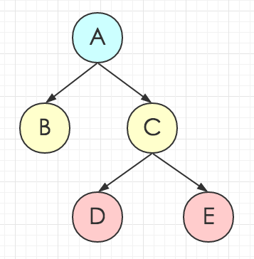

class: cover .cover-content[ # Tiler Pack up static resources. ] --- # Why -- <br /> ### 我们面临的主要问题： .trigger-time.trigger-time--2em[ - Module/Loader 采用 SeaJS，串行加载效率低 - 模块化、组件化深入推进，请求量较多 ] --- <div> </div> --- # What <br /> ### 具体需求： .trigger-time.trigger-time--2em[ - 支持按照页面进行 JS、CSS 文件的打包 - 支持公共包的配置，优化加载速度 - 支持页面组件打包 - 支持 CSS 外联资源的处理 - 与 Gulp 较好集成 ] --- # 一个栗子 --- <div style="margin: -2em"> </div> --- <div style="margin: -2em"> </div> --- <div style="margin: -3em"> </div> --- # How <br /> <br /> .trigger-time.trigger-time--2em[ - 借鉴 Browserify 思想，基于 Stream - 将复杂的逻辑拆分为多个串行的 Transform - 处理对象采用和 Gulp 兼容的 Vinyl ] --- # Stream <div style="margin: 0 -2em -2em"> </div> --- # 主要流程 <div style="margin: 2em -2em 0"> </div> --- # 核心代码 .code-block[ ```javascript const pipeline = splicer.obj([ 'record', [this._recorder()], 'deps', [this._deps], 'sort', [this._sort()], 'cut', [this._cut()], 'emit', [this._emitDeps()], 'pack', [this._pack()], 'append', [this._append()], 'write', [this._write()], ]); ``` ] --- # Deps ### 分析页面依赖 .code-block[ ```hbs {{StyleLink 'order.css'}} {{Component 'address-selector'}} <script> seajs.use('jsBasePath/order/immediate'); </script> ``` ] -- .code-block[ ```bash # JS js/order/immediate-entry.js ├──component/address-selector/address-selector.js └──js/order/immediate.js # CSS css/order/immediate-entry.css └──css/order.css ``` ] --- # 配置的公共层 .code-block.code-block--small[ ```bash { script: [ { path: getClientPath('js/common/seed.js'), includes: resource.COMMON_SCRIPTS.map(script => { return getClientPath('js/' + script); }), }, getClientPath('js/common/core-1.1.js'), ], style: [ { path: getClientPath('css/seed.css'), includes: resource.COMMON_STYLES.map(style => { return getClientPath('css/' + style); }), }, ], }; ``` ] --- # 递归分析依赖  --- # 小结 <br /> .trigger-time.trigger-time--5em[ - 输入页面 - 分析页面资源、页面组件资源 - 递归分析依赖关系 - 根据依赖关系进行拓扑排序 - 输出页面依赖的所有 JS、CSS ] --- # Cut ### 资源分组，为接下来的打包提供依据 <div style="margin: 0 -2em -2em"> </div> --- # Emit ### 发送依赖和分组信息给外部，方便进行数据记录 .code-block[ ```javascript const self = this; return new Transform({ objectMode: true, transform(row, enc, next) { self.emit('dep', row); this.push(row); next(); }, }); ``` ] --- # Pack ### 根据分组信息进行打包 <div style="margin: 0 -2em -2em"> </div> --- # Append ### 添加 CSS 外联资源 .code-block[ ```css .travel-info .true-show span:before { position: absolute; content: ''; width: 22px; height: 20px; background: url('../img/usericon.png') -80px 0 no-repeat; } ``` ] <div style="margin: 0 -2em"> </div> --- # 与 Gulp 整合 .code-block.code-block--small[ ```javascript var stream = tiler.bundle() .pipe(addsrc(standaloneFiles, { base: clientDir })) .pipe(dedupe()) .pipe(hold()) .pipe(gulp.dest(staticDir)) // stamp version .pipe(imagemin()) .pipe(stampImageVersion) .pipe(hold()) .pipe(rewriteStyleUrl) .pipe(stampOtherVersion) .pipe(gulp.dest(staticDir)) // compress .pipe(stampMin) .pipe(cssmin()) .pipe(filterScript) .pipe(uglify()) .pipe(filterScript.restore) .pipe(gulp.dest(staticDir)); ``` ] --- # TODO .trigger-time.trigger-time--4em[ - 支持按内容去重 - 支持更加灵活、自动的公共层打包 - 支持 CommonJS 规范的模块 - 支持更高性能要求的即时打包 ] --- # 参考 .trigger-time.trigger-time--9em[ - [browserify](http://browserify.org/) - [gulp vinyl](https://github.com/gulpjs/vinyl) - [depsify](https://github.com/reducejs/depsify) ] --- # Welcome Contribute! ## [@ucar/tiler](http://10.104.10.68:7002/package/@ucar/tiler) --- name: last-page # Thanks